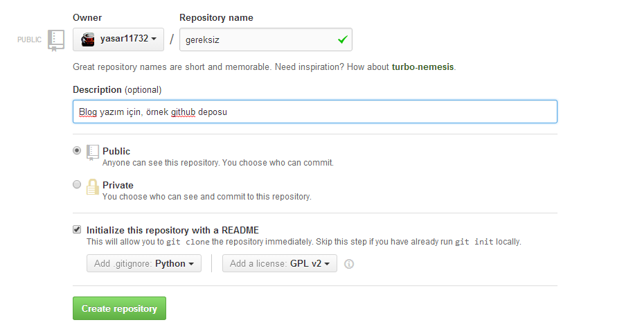

Git ve Github'a başlangıç
Bir arkadaş mail yoluyla Git ve Github kullanımıyla ilgili bir yazı rica etti, hazır vaktim varken hazırlayayım istedim. Bu yazının hedef kitlesi git ve github kullanmaya tamamen sıfırdan başlayacak kişiler olacak. Dolayısıyla, sadece en temel konulardan bahsedeceğim. Zaten kendim de ileri seviye bir git kullanıcısı değilim. Ancak, günlük ihtiyaçlarımı idare edecek kadar git kullanabiliyorum. Yine de, git ve github konusundaki deneyimlerimin, bu yazının ihtiyaçlarını karşılamak için yeterli olacağına inanıyorum. Başlamadan önce değinmek istediğim bir diğer nokta da, özellikle github'la birlikte git nasıl kullanılır ona değineceğim. Hatta bazen, sadece github'a özgü özelliklere de değineceğim. Dolayısıyla, eğer github kullanmak istemiyorsanız, bu yazının bazı bölümleri sizi ilgilendirmeyecektir, baştan belirteyim.
Git Nedir?
Öncelikle, kullanacağımız araçları tanımlamak faydalı olacaktır. Basitçe söylemek gerekirse, temel olarak şu işlere yarayan bir araç; birincisi, belgelerinizin tarihini tutuyor. Örneğin, ben bu yazıyı yazarken git kullansaydım, belgenin şu anki halini git kullanarak kaydedebilirdim. Daha sonra belgeyi yazdıkça, belli dönüm noktalarında da kaydetmeye devam edebilirim. Böylelikle, eğer ileride bir hata yaparsam, belgenin istediğim tarihteki haline geri dönebilirim. Hatta istersem, belgenin dünkü haliyle, bugünkü halini birleştirebilirim. Böylelikle, yaptığım hiçbir işi kaybetmemiş olurum.
Git'in ikinci temel versiyonu da, paylaşımcı olması. Biraz önce, git kullanarak, belgelerinizin geçmişini kayıt altında tutabilirsiniz demiştik, paylaşımcı derken kastettiğim şey ise, bu tarihin kolaylıkla insanlar arasında paylaşılabilmesi. Diyelim ki, sizinle bu belgenin geçmişini paylaştım, siz de, bu belgenin üstünde bazı değişiklikler yaptınız. Git, sizin ve benim düzenleme geçmişlerini hiçbirşey kaybetmeden birleştirebiliyor. Böylelikle, aynı belge üzerinde birden fazla kişi çalışabiliyorsunuz.
Git'in bir diğer özelliği de, dallanmaya izin veriyor olması. Diyelim ki, elinizin altında bir programın kararlı bir sürümü var. Bunun üzerinde, yeni bir özellik eklemek için değişiklik yapacaksınız. Bu durumda, programınızın kararlı sürümünü kaybetmiş olursunuz. Eğer programınızı git ile kontrol altında tutuyorsanız, kararlı halini ve yeni özelliği hazırladığınız halini, ayrı dallardan düzenleyebilirsiniz. Yeni sürümünüz hazır olduğu anda, bunu kararlı sürümle birleştirebilirsiniz. Eğer siz yeni bir özellik hazırlarken, başka birisi de ana program üzerinde başka değişiklikler yaparsa, bu yine de bir problem teşkil etmeyecektir.
Github ise, yukarıdaki bahsettiğim paylaşımcı özellikler için, internet üzerinden bir mecra sağlıyor. Neyse, bu kadar teori yeter, biraz da iş üstünde görelim.
Github üzerinde depo oluşturmak
Normalde git dersleri, kendi bilgisayarınızda bir git deposu oluşturarak başlar. Ancak, ileride bazı kolaylıkları beraberinde getireceği için, ben önce github deposu oluşturarak başlamayı tercih ediyorum. Öncelikle, github'a üye olun. Üye olurken bir sıkıntı yaşamayacağınızı varsayıyorum. Üye girişi yaptıktan sonra, ana sayfada, yeşil bir + New repository butonu görecekseniz (Göremeyenler, buraya tıklasın). Aşağıdaki gibi bir form karşınıza gelecek, bunu doldurun.

Burada çok açıklayacak birşey yok. Depoyu, otomatik olarak, readme, lisans ve .gitignore dosyaları oluşturacak şekilde ayarladım. Siz de bu şekilde ayarlarsanız, yapmanız gereken amelelik bir nebze azalacaktır. Create Repository dedikten sonra, şuna benzer bir deponun oluşması gerekiyor.

Oradaki 3 dosya, biraz önce yaptığımız ayarladan dolayı orda. Tamamen boş bir depo da oluşturabilirdik.
Sırada, bu depoyu kendi bilgisayarımıza kopyalamak var. Bunun için, bilgisayarınızda git'in yüklü olması gerekiyor. Linux kullananlar, yazılım depolarında illa ki git'i bulabilecektir. Windows kullananlar için ise, çeşitli opsiyonlar mevcut. Benim windows kullananlara tavsiyem, Git resmi sitesinden indirip, hiçbir ayarını değiştirmeden olduğu gibi kurmak olacaktır. Böylece, hem git gui, hem de git bash kurulacak. Yazının devamını takip edebilmek için, git bash'i çalıştırıp, anlattığım komutları oraya girmeniz gerekiyor.
Hazır olduğunuzda, deponuzun https clone adresini bulmanız gerekiyor. Bunu deponuzun ana sayfasında, sağ alt tarafta görebilirsiniz. Eğer göremezseniz, adres çubuğunda gördüğünüz adrese .git eklemeniz yeterli olacaktır. ssh adresi yerine https adresini kullanmayı tercih ettim. ssh'nin kendine göre avantajları olsa da, kurulumu biraz da uğraştırıcı olacağı için, o kısmı atlıyorum. Herneyse, aşağıdaki komutu kullanarak, github üzerindeki git deponuzu bilgisayarınıza kopyalayın.
$ git clone https://github.com/yasar11732/gereksiz.git
Yukarıdaki adresi, kendi deponuzun adresiyle değiştirmeyi unutmayın. İsterseniz benim depomu da kopyalayabilirsiniz, ancak, yazının devamını adım adım takip etmenize engel olacak birtakım sıkıntıları da beraberinde getirecektir, şimdiden uyarayım.
Cloning into 'gereksiz'... remote: Counting objects: 5, done. remote: Compressing objects: 100% (5/5), done. remote: Total 5 (delta 0), reused 0 (delta 0) Unpacking objects: 100% (5/5), done. Checking connectivity... done.
Şimdi, bu yeni oluşan klasöre gidip, dosyalarımıza bir bakalım;
$ cd gereksiz
$ ls
LICENSE README.md
Linux komutlarına aşina olmayanlar için, cd komutu klasör değiştirmeye, ls komutu ise, klasör içeriklerini listelemeye yarıyor. Windows'da
da git bash linux ortamını taklit ettiği için, aynı komutlar orada da geçerli.
Şimdi, taze git depomuzu biraz daha inceleyelim, git log komutu, deponun geçmişini göremenizi sağlıyor.
$ git log
commit 1861843fb3a561fccb1a3162022831cbed021a3b Author: Yaşar ArabacıDate: Tue Jul 22 04:20:04 2014 +0300 Initial commit
Şu anda geçmişimde tek bir commit var. Bu commit github tarafından benim adıma otomatik olarak yapıldı. Initial commit de, bu commit'in mesajı. Git deposuna ne zaman bir şey kaydederseniz, ne yaptığınıza dair bir açıklama yazmak zorundasınız. Böylece, siz veya başkası, deponun geçmişine baktığında, depo geçmişi anlamlı görünecektir.
Şimdi de git remote komutunu inceleyelim.
$ git remote -v
origin https://github.com/yasar11732/gereksiz.git (fetch) origin https://github.com/yasar11732/gereksiz.git (push)
Yazının başında, deponuzun geçmişini paylaşabileceğinizi söylemiştik. Deponuzun geçmişini paylaşmanız için, remote adresleri eklemeniz gerekiyor. Böylece, değişiklikleri alırken veya gönderirken, gerekli adresten ismen bahsedebilirsiniz. Şu anda origin isminde tek bir remote var. Bu depoyu başka bir yerden kopyalayarak oluşturduğumuz için, asıl kaynak origin isminde bir remote olarak kendiliğinden ayarlandı. İstediğiniz kadar remote ekleyebilirsiniz, ancak şu anda buna bir lüzum olmadığında, o adımı atlıyorum.
Artık sırada, bir takım değişiklikler yapıp, bunları git deposuna eklemek var. Buna geçmeden önce, 3 farklı dosya konumundan bahsedeceğim. Birincisi, çalışma kopyası, ikincisi stage, üçüncüsü ise commit. Çalışma kopyası, o anda klasörü açtığınızda göreceğiniz versiyon. Örneğin, şu anda git deposuna yeni bir dosya eklersek, bu sadece çalışma kopyasında bulunuyor olacak, git henüz bu dosyayı geçmişinize eklemedi.
echo "deneme" > gereksiz.txt
Linux komutlarını bilmeyenler için, yukarıdaki komut gereksiz.txt isimli bir dosyaya, deneme yazıyor. Şimdi git status yazarak, deponun durumuna
bir göz atalım.
$ git status
On branch master Your branch is up-to-date with 'origin/master'. Untracked files: (use "git add..." to include in what will be committed) gereksiz.txt nothing added to commit but untracked files present (use "git add" to track)
Çıktıyı biraz inceleyelim. Öncellikle, şu anda master isimli bir branch'de olduğumuzu görüyoruz. Bu yazıda branch'lere fazla değinmeyeceğim ama, master branch, ana branch'e verilen geleneksel bir isim. origin/master ile aramızda bir fark olmadığını da görüyoruz. Bu birazdan değişecek. Untracked files kısmında ise, çalışma kopyasında olup, git tarafında henüz takip edilmeyen dosyaları görüyoruz. Bu dosyanın git tarafından takip edilmesi için, bunları stage kısmına aktarmamız gerekiyor. stage kısmı, çalışma kopyasındaki değişiklikleri, kaydedilmeye hazırlandığı yer.
$ git add gereksiz.txt $ git status
On branch master Your branch is up-to-date with 'origin/master'. Changes to be committed: (use "git reset HEAD..." to unstage) new file: gereksiz.txt
Windows üzerinde çalışanlar, CRLF ile ilgili bir uyarı alacaklar, bunu göz ardı edebilirsiniz. git add <dosya> komutu, dosyayı stage'e ekliyor.
Tekrar git status ile duruma baktığımızda, gereksiz.txt'nin kaydedilecek değişikler arasında dahil olduğunu (stage'de olduğunu) görüyoruz. Eğer
bunu kaydetmekten vazgeçersek, stage'den geri alabiliriz, ancak şuan bu yeni dosyayı, git geçmişine kaydetmeyi tercih edeceğiz.
$ git commit -m "gereksiz.txt ekledim."
[master 1cfb62d] gereksiz.txt ekledim. 1 file changed, 1 insertion(+) create mode 100644 gereksiz.txt
git commit komutu, stage'deki dosyaları, git geçmişine kaydediyor. -m "gereksiz.txt ekledim" kısmı ise, commit mesajını belirtiyor.
Bunu teyit etmek için, git log komutuyla, geçmişimize bir göz atalım.
$ git log
commit 1cfb62ddbebe707678ee547f844fb4d1f4ae15e8 Author: Yaşar ArabacıDate: Tue Jul 22 05:18:04 2014 +0300 gereksiz.txt ekledim. commit 1861843fb3a561fccb1a3162022831cbed021a3b Author: Yaşar Arabacı Date: Tue Jul 22 04:20:04 2014 +0300 Initial commit
Artık geçmişimizde iki farklı commit var. origin/master branch'ine göre, 1 commit ilerdeyiz artık. Bunu git status komutuyla teyit edebilirsiniz.
Değişiklikleri github'a geri yollamadan önce, son bir değişiklik daha yapalım.
$ echo " ikinci değişiklik" >> gereksiz.txt $ git status
On branch master Your branch is ahead of 'origin/master' by 1 commit. (use "git push" to publish your local commits) Changes not staged for commit: (use "git add..." to update what will be committed) (use "git checkout -- ..." to discard changes in working directory) modified: gereksiz.txt no changes added to commit (use "git add" and/or "git commit -a")
İlk komuttaki >> dosyanın sonuna ekleme yapmamıza yarıyor. Şu an gereksiz.txt'nin değiştirildiğini ancak henüz stage'de olmadığını görüyoruz. Şu anda
git diff komutuyla, stage ile çalışma kopyası arasındaki değişiklikleri görebiliriz. git diff komutu, herhangi iki commit veya dosya arasındaki
farklılıkarı görmenize yarıyor. Eğer hiçbir parametre belirtmezseniz, stage ile çalışma kopyası arasındaki farklılıkları görüyorsunuz.
$ git diff
diff --git a/gereksiz.txt b/gereksiz.txt index 8836a06..6a4e197 100644 --- a/gereksiz.txt +++ b/gereksiz.txt @@ -1 +1,2 @@ deneme + ikinci değişiklik
Evet, dosyada ikinci satıra ikinci değişiklik yazıldığını görüyoruz. Bunu da daha önceki gibi, git add gereksiz.txt ile stage'e ekleyip, git commit -m "ikinci değişiklik"
ile kaydedebiliriz.
Artık yeterince değişiklik yaptığımıza göre, yerel değişiklikleri, github deposuna gönderebiliriz. Bunun için, git push <remote> <branch> komutunu kullanacağız.
$ git push origin master
Username for 'https://github.com': yasar11732 Password for 'https://yasar11732@github.com': Counting objects: 4, done. Delta compression using up to 4 threads. Compressing objects: 100% (2/2), done. Writing objects: 100% (3/3), 299 bytes | 0 bytes/s, done. Total 3 (delta 1), reused 0 (delta 0) To https://github.com/yasar11732/gereksiz.git 1861843..1cfb62d master -> master
Böylelikle, yerel değişiklikleri github'a yüklemiş olduk. İşlem sırasında, github kullanıcı adı ve şifrenizi girmeniz gerekecek. Şifrenizi girerken, karakterler ekranda görünmeyecek, kafanız karışmasın.
Temel olarak git nasıl çalışıyor öğrendiğimize göre, github üzerinden nasıl sosyalleşiriz, biraz da ona değinelim. Github'da destek olmak istediğiniz bir depo varsa, doğrudan o depoya yazma hakkınız olmadığı için, önce kendinize bir kopyasını almanız gerekiyor. Forklamak istediğiniz depoya gittiğinizde, sağ üst köşede, fork linkini göreceksiniz. Bunu denemek için, https://github.com/yasar11732/gereksiz adresindeki depoyu forklayabilirsiniz.
Bunu yaptıktan sonra, https://github.com/
Deponun ana ekranından, gereksiz.txt'ye tıklarsanız, yukarıda edit linki göreceksiniz. Böylece, doğrudan github üzerinden değişiklik yapıp bunları commit edebilirsiniz. En aşağıda, commit mesajını girip, commit changes tuşuna basmanız yeterli.
Kendi deponuzun ana sayfasına geldinizde, benzeri bir tuş göreceksiniz. Bu tuş, orijinal deponun sahibine kendi deponuzda yaptığınız değişikleri bildirip, ben bunları yaptım, sen de bunları kendi depona al demek oluyor. Bu tuşa tıklayıp, bana bir pull request gönderin. Eğer yaptığınız değişiklikleri beğenirsem, merge ederim (sizin değişikliklerinizi kendi depoma dahil ederim).
Siz de başka bir depodan yeni güncellemeleri almak istediğinizde, bunu git pull <remote> <branch> komutuyla yapıyorsunuz. Eğer remote güncellemeleri
ile kendi değiştirdiğiniz dosyalar arasında bir çakışma yoksa, kolaylıkla değişiklikler birleşiyor. Eğer çakışma varsa, bu çakışmaları kendiniz
çözümlemeniz gerek. Şu an yoruldum, daha fazla yazamayacağım. Merge ile ilgili detayları belki daha sonra tekrar yazarım. Kolay gelsin.